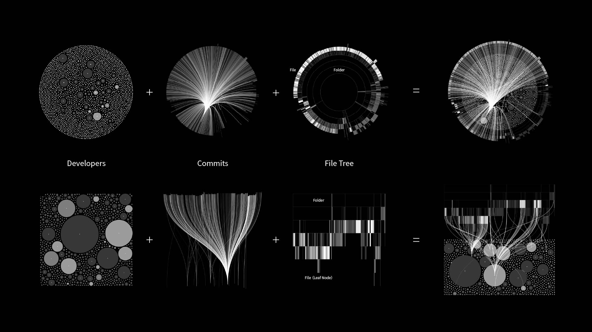
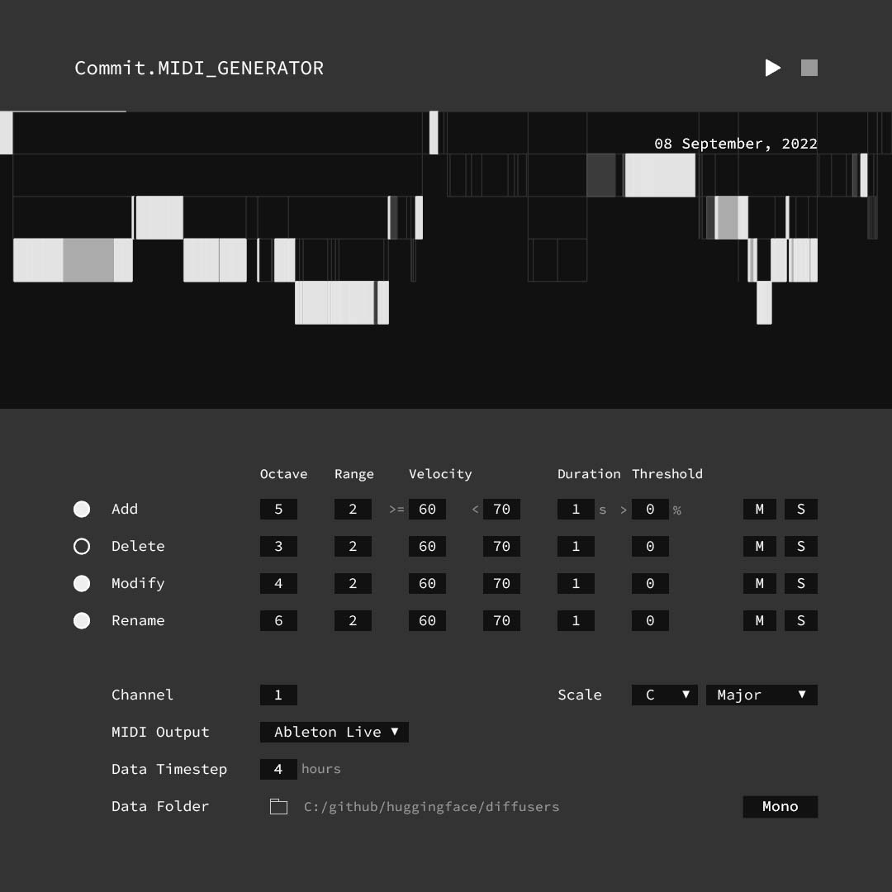
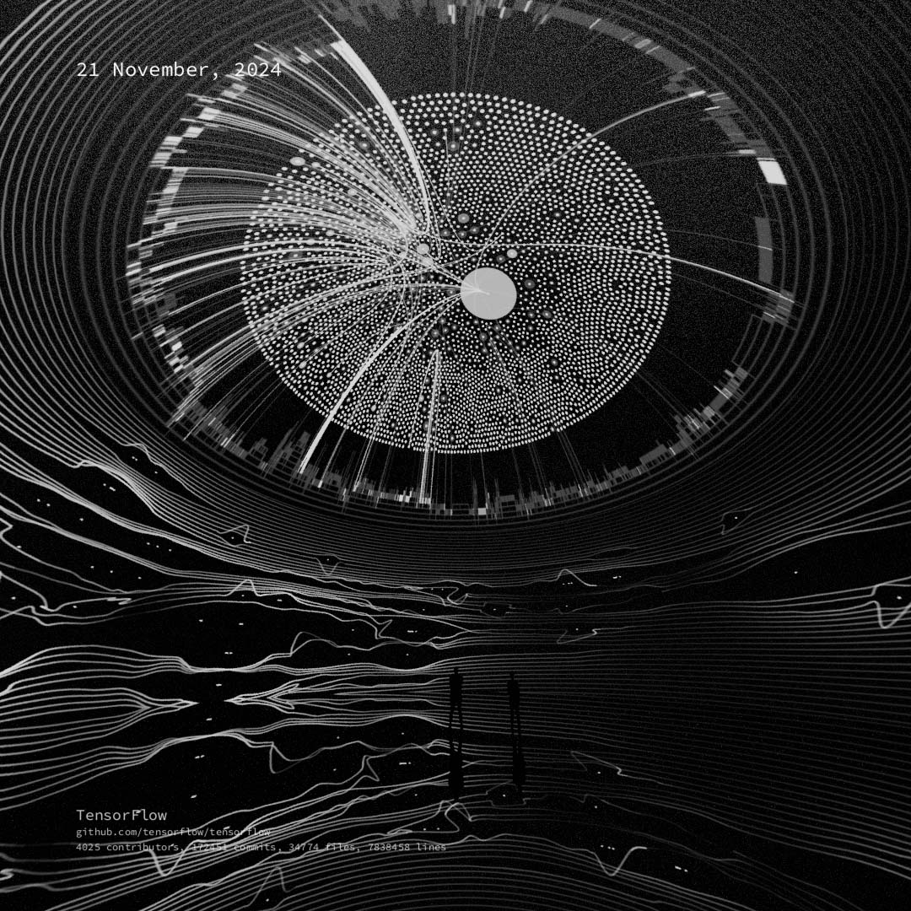

Commit
Video / Immersive Video, Variable, 2018-Present (2024 Version)
Commit is a series of visualization and sonification works based on GitHub commit history. By analyzing developers' code commit data on GitHub, the work uses data-driven approaches to generate abstract visual dynamics and sound sequences, presenting from a macro perspective the process of developers building code projects from scratch through open-source collaboration on the Internet. The work transforms the technical act of code committing into a unique visual and sound art experience, and explores the diversity of visual and sound expressions of data through various mapping algorithms and rules.
The video version of the series is on X.
The data of the work comes from GitHub's Git Commit History, including the developers' commit times, types, and collaboration relationships. Driven by data, the work translates the process of developers jointly building knowledge and technology in Internet collaboration into perceptible visuals and sounds, hoping to guide people to rethink the human effort and creativity behind technical collaboration.
Visualization

Two visualization tools were developed to generate visualizations in radial or horizontal form. Each circle is a developer, each curve is a commit, and the file tree of the code project grows as developers collaborate. The work also explores a lot of visual forms and spatial presentation methods, which is divided into online Internet video version and offline space exhibition version, providing a multi-dimensional experience.
Sonification

Two MIDI generation tools were developed to generate rhythm and melody, convert data into sound, give rhythm and melody to the code commit process, and trying to create a unique form of sound expression.
Different Data-Driven
Different data and mapping algorithms are used to drive visualization and sonification systems, forming different dynamic processes of visual and sound. The collaborative process of each code project has its own mode and frequency, and these differences bring diversity to visual and sound expression.
Immersive Space
Spherical Screen
Dome Screen

Combination

The commit data is used to generate trigger data, and the generation and dynamic changes of abstract visual are driven based on the trigger data. By combining abstract visual with visualization, the commit data of each code repository can be presented in a more distinctive way.
L-Shaped Screen

Data-Driven Latent Space Walk
In this series of works, many AI underlying technology code projects are visualized and sonified, and attempts are made to combine visualization with AI systems to drive AI to walk in the latent space through data. The specific method is to use the visualization system to generate conditional control images, input them into AI, and drive AI to walk in the latent space, so as to achieve the process of developers committing history data to drive AI generation. The purpose of this is to hope that while people are using AI tools and marveling at the increasing maturity of AI technology, they can also pay attention to the significance of human beings promoting the development of scientific and technological intelligence through collective wisdom behind these technologies.